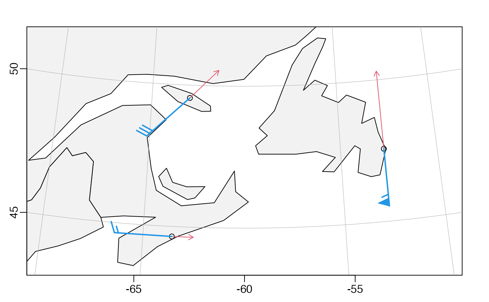

Plot a direction field on a existing map, either using arrows, which is the oceanographic convention, or using wind barbs, which is a meteorological convention.
Arguments
- longitude, latitude
numeric vectors of the starting points for arrows, or the locations of grid cells.
- u, v
numeric vectors or matrices holding the components of a vector to be shown as a direction field.
- scale
an indication of the length of the arrows or lines. For the "arrow" style, this is arrow length in latitude degrees per unit of velocity. For the "barb" style, this is the length of all lines, regardless of the velocity, because in this style velocity is indicated with barbs and pennants.
- length
an indication of the size of arrow heads, for "arrow" style, or of the barbs, for "barb" style. If this is NULL (which is the default), then 0.05 will be used for the "arrow" style, and 0.2 for the "barb" style.
- code
an indication of the style of arrow heads or barbs. For the arrow style, this is a number that is passed to
arrows(), with 2 as the default, meaning to draw the arrow as a conventional vector. For the wind-barb style, this is the string"barb".- lwd
a numeric value indicating the width of the line segments that make up the speed indicators.
- col
color of the speed indicators.
- debug
an integer specifying whether debugging information is to be printed during the processing. This is a general parameter that is used by many
ocefunctions. Generally, settingdebug=0turns off the printing, while higher values suggest that more information be printed. If one function calls another, it usually reduces the value ofdebugfirst, so that a user can often obtain deeper debugging by specifying higherdebugvalues.
Details
As noted in the “Description”, there are two styles. 1. Arrow Style: arrows are drawn from the stated locations in the direction of the flow defined by the (u,v) vector. This is the usual convention in oceanographic work. 2. Barb Style: to create "wind barbs", according to a convention used in meteorological charts. Unlike arrows, which indicate speed by the arrow length, barbs indicate speed by angled lines and possibly triangles located at the upstream end. Note that the meanings of the function parameters vary across the two styles.
The "arrow" style is quite common in the oceanographic literature.
Arrows point in the direction of the velocity defined by (u,v),
and the length of those arrows is proportional to the speed,
sqrt(u^2+v^2).
By contrast, in the "barb" notation, the lines are of equal length
(compared with distance on the ground), with speed being indicated
with barbs. Many sources explain the notation, e.g.
https://www.weather.gov/hfo/windbarbinfo. The lines extend from the
observation longitude and latitude in the direction opposite to the
velocity. Velocities are indicated by barbs, i.e. short line
segments that extend at an angle to the main line and with pennants
(triangles). Speed is given by a combination of pennants and barbs.
A pennant represents 50 speed units, a long barb 10 units, and a
short barb 5 units. Summing these values gives the speed, rounded
to 5 units.
See “Details” for a comparison of the "arrow" and "barb" styles for some made-up velocity data.
There are two possibilities for how longitude, latitude are
combined with u and v.
All four are vectors, and the matching is one-to-one. This is useful for showing velocities at particular individual locations, as in the “Examples”.
longitudeandlatitudeare vectors, whileuandvare matrices. In this case, the lengths oflongitudeandlatitudemust equal the number of rows and columns inuandv, respectively.
See also
A map must first have been created with mapPlot().
Other functions related to maps:
formatPosition(),
lonlat2map(),
lonlat2utm(),
map2lonlat(),
mapArrows(),
mapAxis(),
mapContour(),
mapCoordinateSystem(),
mapGrid(),
mapImage(),
mapLines(),
mapLocator(),
mapLongitudeLatitudeXY(),
mapPlot(),
mapPoints(),
mapPolygon(),
mapScalebar(),
mapText(),
mapTissot(),
oceCRS(),
oceProject(),
shiftLongitude(),
usrLonLat(),
utm2lonlat()
Examples
library(oce)
data(coastlineWorld)
par(mar = rep(2, 4))
mapPlot(coastlineWorld,
border = "black",
col = "grey95",
projection = "+proj=lcc +lat_1=40 +lat_2=60 +lon_0=-60",
longitudelim = c(-70, -50), latitudelim = c(45, 50)
)
# Invent wind data for three locations in eastern Canada
dataText <- "
lat,lon,u,v,location
44.6476,-63.5728,15,0,Halifax
49.5495,-62.9555,20,20,Anticosti Island
47.5556,-52.7453,0,55,St. John's"
data <- read.csv(text = dataText)
# Dots at observation locations, for reference
mapPoints(data$lon, data$lat)
# Red: arrows that extend downwind from the location
mapDirectionField(data$lon, data$lat,
u = data$u, v = data$v, scale = 0.05,
length = .08, code = 2, col = 2, lwd = 2
)
# Blue: barbs that extend upwind from the location
mapDirectionField(data$lon, data$lat,
u = data$u, v = data$v, scale = 2, code = "barb", lwd = 2, col = 4
)
